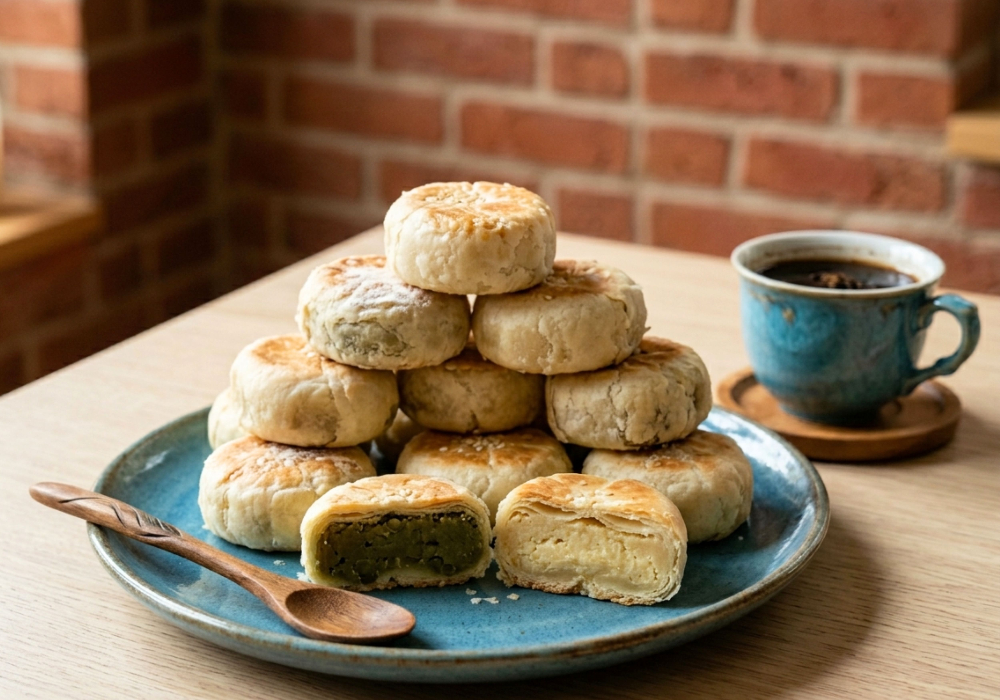

Culinary
Three signature Yogyakarta dishes you must taste during your trip.

Gudeg
A Jogja specialty made from young jackfruit cooked for a long time with coconut milk and palm sugar, giving a sweet-savory taste, and usually served with spicy krecek, eggs, and bacem chicken.

Bakpia Pathok
A layered flour pastry typical of Jogja with fillings of mung bean, chocolate, or cheese, crisp on the outside and soft on the inside, perfect as a snack or a souvenir.

Sate Klatak
A unique young-goat satay from Imogiri skewered on bicycle spokes so it cooks evenly, simply seasoned with salt, and served with a savory, spiced gulai broth.